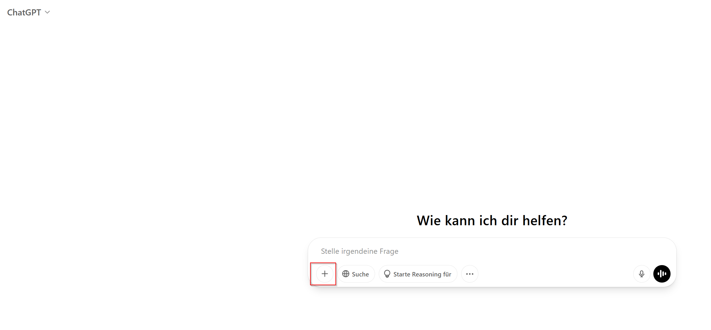
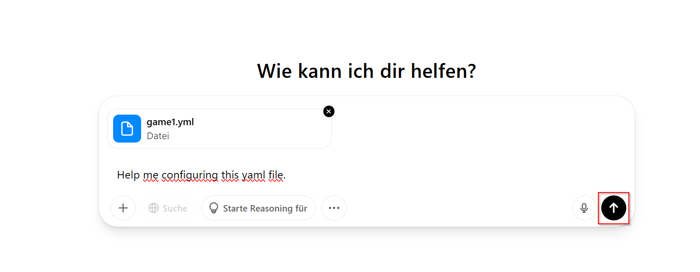
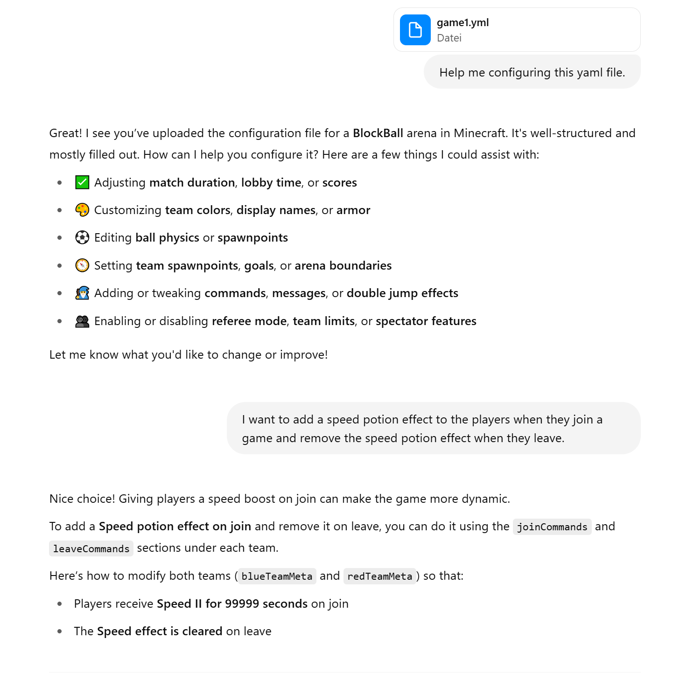
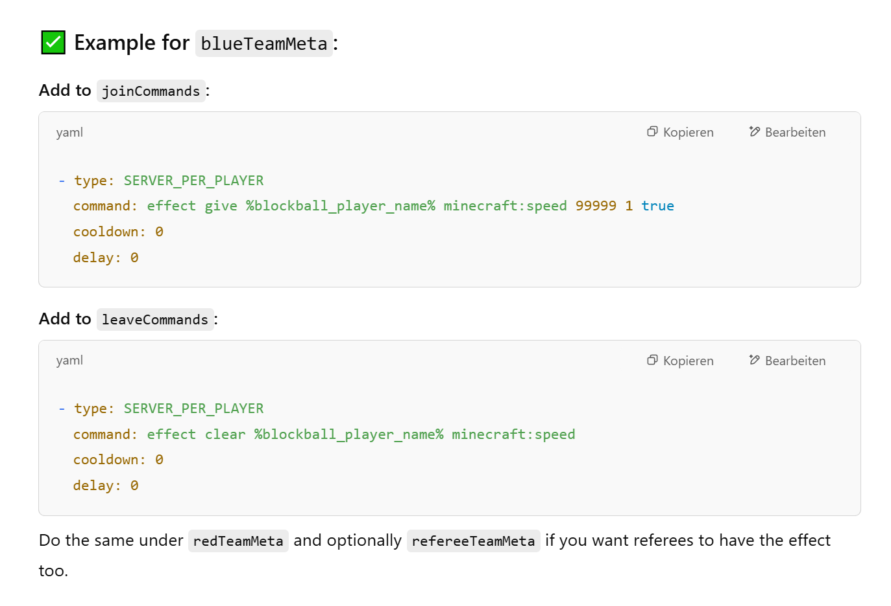
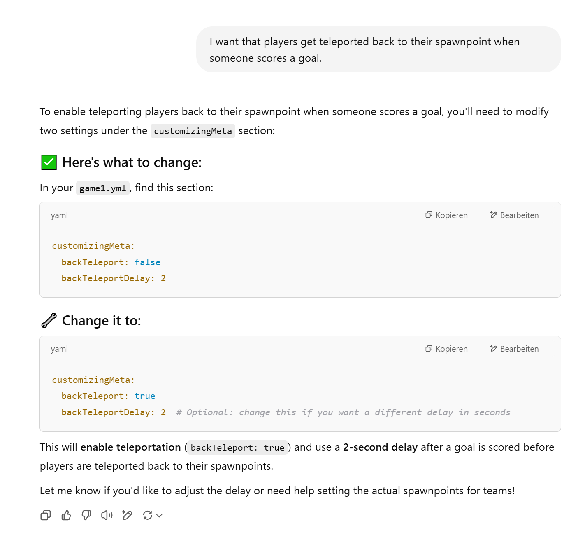

Customization
This page explains how to customize a BlockBall game even further.
All customizations of a game are done by changing properties in your arena.yml file.
If you have followed the previous guide, it is located under /plugins/BlockBall/arena/game1.yml.
Open the arena file in your favourite text editor (e.g. Notepad++) and take a look at the comments in the file.
Edit the file and apply the changes to your game using the command /blockball reload.
Using CHAT-GPT to edit the arena file.
As there are tons of properties, you can actually use AI to easily edit the arena file without understand the structure.
You can find an example explained in the images below.
CHAT-GPT is able to directly edit the file and generate a download link. However, when testing it, the file structure was broken is some cases. Therefore, it is recommended that you apply the suggested changes of CHAT-GPT to the file yourself.




